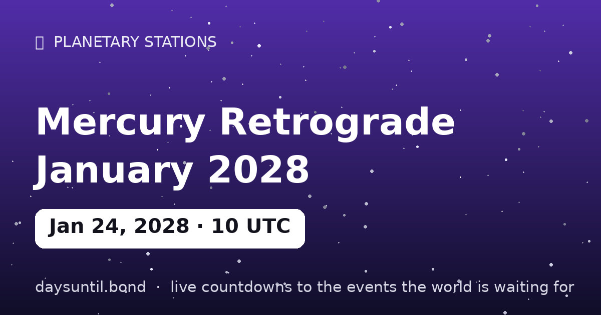

How Many Days Until Mercury Retrograde January 2028?
–days
–hours
–minutes
–seconds
Mercury Retrograde January 2028 falls on Monday, January 24, 2028.
📅 – weeks
💼 – weekdays
🛌 – weekend days
🗓️ – months (approx)

Quick facts
| Station moment (UTC) | January 24, 2028 · 10:55 |
|---|---|
| Zodiac position | 19°41' Aquarius |
| Direction | Turning Rx |
| Duration of phase | ~3 weeks |
About Mercury Retrograde January 2028
Mercury stations retrograde on January 24, 2028 at 10:55 UTC, at 19°41' Aquarius — computed to the minute with our own Keplerian ephemeris.
Mercury retrograde is the famous three-week review of communication, travel and contracts that happens three or four times a year. The station is the turning point itself: the day the planet's apparent motion reaches zero before reversing. In tradition, days around a station carry the event's themes most intensely — decisions made at a station are said to set the tone for the whole season that follows. Full guide with a free chart checker: the Mercury retrograde guide on Prophetic.